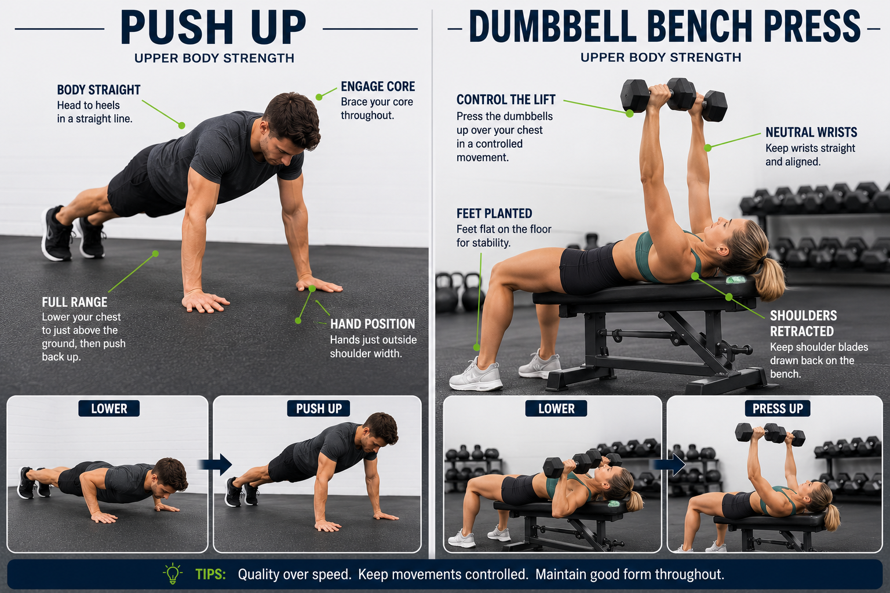
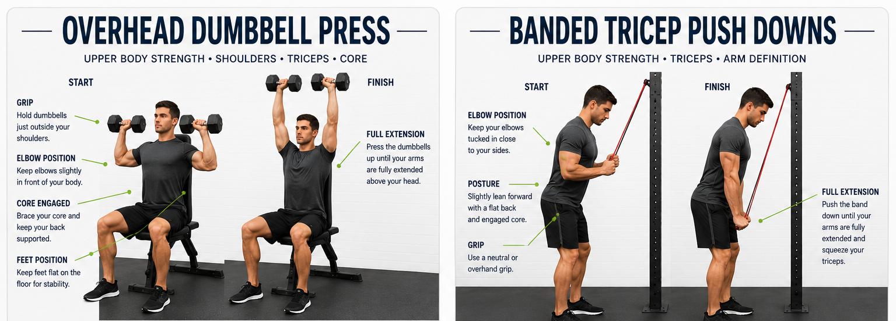
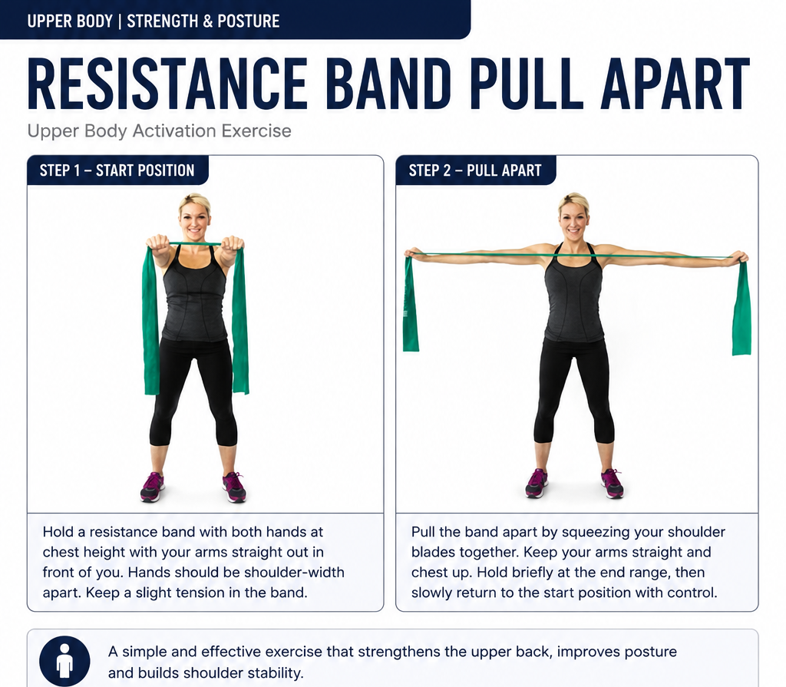
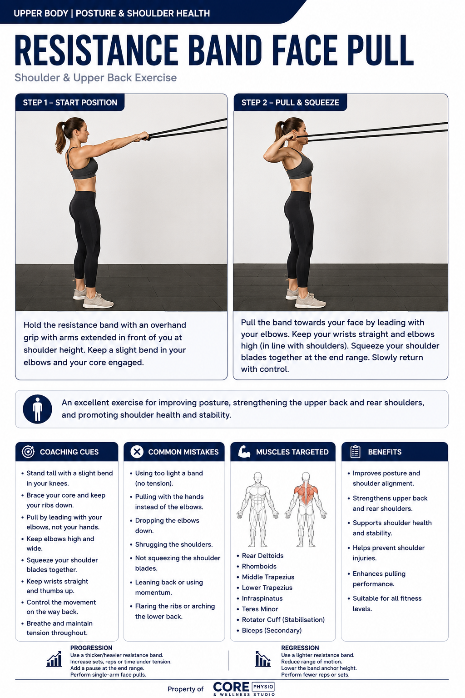
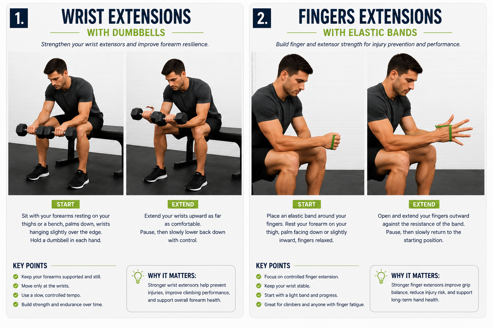
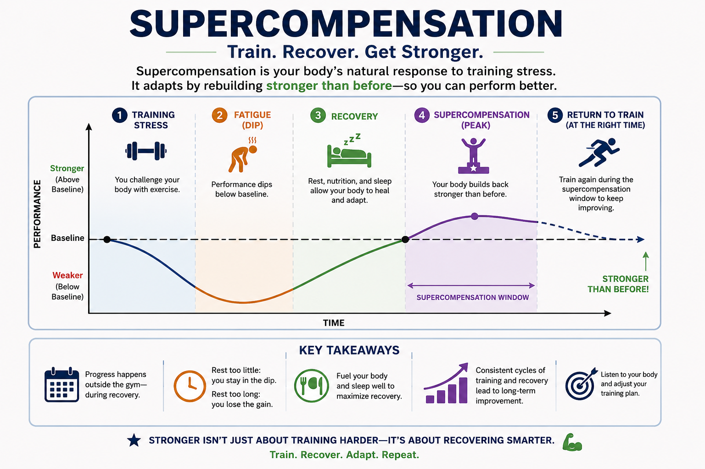

Module 04 · 04 of 07
Written Guide + Quiz
Why It Matters
Programme design is the core technical skill of any coach. A well-constructed training programme turns athletic goals into structured, progressive, and recoverable action. This module provides the theoretical tools — FITT-VP, periodisation, and recovery principles — that will underpin every training plan you write for your climbing athletes.
By the end of this module, you will be able to:
The FITT-VP principle is the foundational framework for structuring any exercise prescription. It provides six levers that a coach can adjust to create the appropriate training stimulus for a given client, goal, and phase of training. Mastery of FITT-VP is essential before attempting periodisation.
| Variable | Definition & Key Considerations |
|---|---|
| F — Frequency | How often training occurs. Measured in sessions per week. Too low = insufficient stimulus; too high = inadequate recovery. Consider: training history, volume per session, lifestyle, and current fitness level. |
| I — Intensity | How hard the training is. Measured differently by type: % 1RM for strength, RPE or % HRmax for cardio, difficulty grade for climbing. Intensity is the most powerful driver of adaptation but also the highest injury risk. |
| T — Time (Duration) | How long each session or bout lasts. Inversely related to intensity — maximal efforts cannot be sustained long; low-intensity work can be extended. Includes warm-up and cool-down. |
| T — Type (Mode) | The form of exercise. For climbing coaches: on-wall climbing, hangboard, campus board, resistance training, cardio, mobility work. Each stimulus produces specific adaptations (specificity principle). |
| V — Volume | The total work performed. In resistance training: sets × reps × load. In climbing: total footage climbed, number of problems, duration. Volume is the primary driver of hypertrophy and endurance adaptation. |
| P — Progression | How the training stimulus changes over time to continue driving adaptation. The body adapts to a given load — progression ensures continued challenge. Methods: increase load, reps, sets, reduce rest, increase difficulty. |
The body adapts to training stimuli only when that stimulus exceeds its current capacity. Once it has adapted, the same stimulus no longer produces further gains — it merely maintains the current level of fitness. Progressive overload is the systematic application of increasing stress to drive ongoing adaptation.
Progression methods for climbers:
Critical Principle
Progression must always be done gradually and must be accompanied by adequate recovery. Increasing load too quickly and without recovery is the recipe for overtraining and injury. The Fitness-Fatigue model tells us that performance = fitness − fatigue. Great programming maximises fitness accumulation while managing fatigue.
One of the most common programming errors — at all experience levels — is failing to define how quickly load, volume, or frequency should increase over time. Without clear progression guidelines, athletes either stagnate (too little increase) or break down (too much, too soon). This section provides practical benchmarks grounded in the sports science literature.
A widely cited guideline is to increase total training load (volume, intensity, or frequency) by no more than 10% per week. While not a universal law, the 10% rule provides a useful conservative ceiling for planning purposes — particularly for newer athletes or when introducing a new training quality.
Important nuances:
Different physical qualities have different optimal progression rates. The table below provides practical benchmarks for climbing athletes.
| Training Quality | Recommended Progression Rate | Practical Guidance |
|---|---|---|
| Strength (e.g. max hangs, weighted pull-ups) | Increase load by 2–5% or add 1–2 reps per session/week once target reps are achieved cleanly | Use a simple 'double progression': hit the top of the rep range for all sets before adding load. E.g. target 3×5 — once you hit 3×5 cleanly, add 2.5–5% load next session. |
| Hypertrophy / Antagonist Work | Add 1 set or increase load by 5% every 1–2 weeks | Volume is the primary driver of hypertrophy. Prioritise adding sets across the mesocycle before increasing load. |
| Power Endurance (e.g. 4×4 sets) | Increase problem difficulty by one grade, or reduce rest by 15–30 sec, every 1–2 weeks | Do not increase both difficulty and reduce rest simultaneously. Alternate manipulation. |
| Aerobic Base / ARC Training | Increase session duration by 5–10 minutes per week, or add one additional session per fortnight | Keep intensity stable (Zone 2) while building duration. Adding intensity too early defeats the aerobic base purpose. |
| Climbing Volume (total routes/problems) | Add no more than one session per week, or increase session volume by 10–15% per week | Introduce a new session at low intensity to limit cumulative stress. Watch for grip fatigue across sessions. |
| Flexibility / Mobility | Progress stretching duration by 5–10 sec or add 1–2 reps per week | Flexibility gains are slow — consistency over months matters more than weekly increments. |
Progression cannot continue indefinitely. Every 3–6 weeks (depending on athlete experience and accumulated fatigue), a planned deload is required to allow recovery and enable supercompensation. Following a deload, athletes typically return to training at approximately 70–80% of their pre-deload volume before rebuilding.
Post-deload re-progression guidelines:
| Experience Level | Expected Strength Progression | Volume Progression | Frequency Progression |
|---|---|---|---|
| Beginner (0–1 year) | Gains possible every session (linear progression) | Add sets/reps weekly | 1–2 sessions per week to start; add one session per month once adapted |
| Intermediate (1–3 years) | Gains every 1–2 weeks with appropriate planning | Add volume every mesocycle (3–6 weeks) | 3–4 sessions; increase frequency cautiously between mesocycles |
| Advanced (3+ years) | Gains require full mesocycles of focused work | Volume increases require deload periods to absorb | 4–6 sessions; manipulate density before adding frequency |
Key Coaching Principle
Never progress load and volume simultaneously. Choose one lever per training block. This makes it easier to identify what is driving adaptation (or causing breakdown) and reduces the risk of overloading the athlete's recovery capacity.
Periodisation is the systematic planning of training to achieve peak performance at specific times while minimising injury risk and avoiding overtraining. It organises training into structured time periods — macrocycles, mesocycles, and microcycles — with different training emphases across phases.
| Cycle | Duration & Description |
|---|---|
| Macrocycle | The entire training plan — typically one season or one year. Encompasses all phases from general preparation through to competition and transition. |
| Mesocycle | A block within the macrocycle — typically 3–6 weeks. Each mesocycle has a specific training emphasis (e.g. strength, power endurance, peak performance). |
| Microcycle | A single training week. Contains the specific sessions, volumes, intensities, and recovery days that fulfil the mesocycle's objectives. |
Linear (or classic) periodisation moves progressively from high-volume, low-intensity training toward lower-volume, higher-intensity training as the athlete approaches a competition or performance target. It is the simplest model and well-suited to beginners.
| Phase | Focus & Application |
|---|---|
| Hypertrophy / Base (4–6 weeks) | High volume, moderate intensity. Build work capacity, strengthen connective tissue, address weaknesses. Climbing: ARC training, volume climbing, antagonist hypertrophy. |
| Strength (4–6 weeks) | Moderate volume, higher intensity. Build maximal strength. Climbing: hangboard max hangs, weighted pull-ups, deadlifts. |
| Power / Power Endurance (3–4 weeks) | Lower volume, high intensity. Convert strength to power and endurance. Climbing: campus board, 4×4 boulder sets, limit bouldering. |
| Peak / Specific (2–3 weeks) | Low volume, high specificity. Sharpen performance. Climbing: project attempts, competition simulation. |
| Taper / Recovery (1–2 weeks) | Significantly reduced volume. Allow accumulated fatigue to dissipate while retaining fitness. Light climbing, mobility, rest. |
Typical volume and intensity changes across a linear macrocycle:
Daily Undulating Periodisation (DUP) varies training intensity and volume across different sessions within the same week. Rather than spending 4–6 weeks at a single intensity, the athlete trains different qualities simultaneously. This keeps training varied, reduces accommodation, and can be more engaging for intermediate athletes.
Example weekly structure for a climber using DUP:
DUP progression works differently to linear models — rather than changing phases, the coach progressively increases the load or volume within each session type across the weeks of the mesocycle. For example, max hang loads increase week to week, while 4×4 problem difficulty gradually steps up.
Block periodisation organises training into concentrated blocks (typically 3–4 weeks) where each block has a single dominant training quality. Each block builds sequentially on the last. This model suits intermediate to advanced athletes and is commonly used in elite climbing preparation.
Which Model to Use?
For beginners: linear periodisation — simple, effective, and easy to follow. For intermediates: DUP or block periodisation — more variety and better accommodation of training experience. For advanced/elite climbers: block periodisation with individualised structure based on competition calendar and specific weaknesses.
Resistance training is a cornerstone of climbing-specific conditioning. Whether the goal is finger strength, pulling power, or injury prevention through antagonist work, coaches must understand how to manipulate training variables to produce the intended adaptation.
| Rep Range | Primary Adaptation | Climbing Application |
|---|---|---|
| 1–5 reps (≥85% 1RM) | Maximum strength (neural + structural) | Weighted pull-ups, heavy deadlifts for posterior chain |
| 6–12 reps (67–85% 1RM) | Hypertrophy (muscle size increase) | Antagonist building phase — pushes, rows, shoulder work |
| 13–20 reps (50–67% 1RM) | Muscular endurance | High-rep rows, pushes for endurance phase |
| >20 reps (<50% 1RM) | Local muscular endurance / technique | Body weight antagonist circuits, mobility under load |
| Variable | Guidance for Climbing Coaches |
|---|---|
| Sets | 2–3 sets for beginners; 3–5 for intermediates/advanced. More sets increase volume and hypertrophic stimulus but require more recovery time. |
| Rest Periods | Strength goals: 3–5 min (full PCr recovery). Hypertrophy: 60–90 sec. Endurance: 30–45 sec. Shorter rest increases metabolic stress; longer rest allows greater force production. |
| Tempo | Eccentric-Pause-Concentric-Pause. E.g. 3-1-2-0 (3s lower, 1s pause, 2s lift). Slow eccentrics increase time under tension and are valuable for tendon health in finger training. |
| Exercise Order | Technically demanding or heavy compound movements first (e.g. deadlifts before rows). Assistance work and antagonists after primary movements. Skill work before fatigue. |
| Frequency | Most qualities can be trained 2–3× per week with adequate recovery. Finger strength is a notable exception — tendons recover more slowly than muscle; 48h minimum between high-intensity sessions. |
Climbers develop pronounced pulling-dominant musculature, creating imbalances that predispose the shoulder, elbow, and wrist to injury. Antagonist training — focusing on pushing muscles and external rotators — should be included in every climbing training programme.
Priority antagonist exercises:
Horizontal push — press-ups, dumbbell bench press (2–3× per week, 3×10–15 reps)

Vertical push — dumbbell overhead press, band push-downs for triceps

Shoulder external rotation — band pull-aparts, face pulls (daily or near-daily at low intensity)


Wrist extensors — light dumbbell wrist extensions, finger extension work with rubber band

Antagonist volume is typically kept at 30–40% of total resistance training volume. These muscles are not trained to failure — the goal is balance and injury prevention, not hypertrophy.
Although climbing is not a primarily aerobic sport, the oxidative system contributes to recovery between boulder attempts, sustains longer routes, and supports general health and resilience. Cardiovascular training prescription follows different rules to resistance training and can be structured using heart rate zones.
| Zone | % HRmax | Description & Benefit |
|---|---|---|
| Zone 1 — Recovery | 50–60% | Very easy; promotes blood flow and active recovery. Ideal for rest days and cool-downs. |
| Zone 2 — Aerobic Base | 60–70% | Conversational pace; develops aerobic base and fat oxidation. The foundation of cardiovascular fitness. |
| Zone 3 — Aerobic Threshold | 70–80% | Moderate effort; sustainable but not comfortable. Builds aerobic capacity. |
| Zone 4 — Lactate Threshold | 80–90% | Challenging effort; breathing becomes laboured. Improves the ability to sustain high-intensity efforts. |
| Zone 5 — Maximal | 90–100% | Near-maximal; short intervals only. Develops VO₂ max and anaerobic capacity. |
HRmax = 220 − Age (Karvonen formula — an estimate; ±10–12 bpm individual variation)
For a more accurate HRmax, use a graded maximal exercise test (requires medical supervision for moderate-high risk individuals). The heart rate reserve method provides a more individualised zone calculation:
Target HR = ((HRmax − HRrest) × % intensity) + HRrest
Zone 2 aerobic base work is consistently underprogrammed in climbers. Many athletes spend too much time in Zone 3–4, which is hard enough to accumulate fatigue but not intense enough to drive high-end aerobic adaptations. A well-structured cardiovascular programme for a climber might look like:
Cardiovascular volume should increase gradually — add no more than 10% total cardio duration per week, and avoid introducing high-intensity cardio during climbing-intensive mesocycles to limit cumulative fatigue.
Flexibility and mobility work is often neglected in training programmes but is critical for climbing performance, injury prevention, and longevity. Coaches must distinguish between the types of stretching and when each is appropriate.
| Type | Description & Application |
|---|---|
| Static Stretching | Holding a stretch position for 20–60 seconds. Best performed post-session or on recovery days. Effective for improving flexibility over time but transiently reduces power output — avoid before performance. |
| Dynamic Stretching | Controlled movements that take joints through their full range. Ideal as part of a warm-up — improves mobility, raises tissue temperature, and activates neuromuscular patterns. |
| PNF Stretching | Contract-relax technique: contract the target muscle against resistance, then stretch it. Produces the greatest flexibility gains; requires a partner or coach. Best in a dedicated mobility session. |
| Active Isolated Stretching | Hold each stretch for 1–2 seconds and repeat 10–12 times. Maintains neural activation while improving range of motion. Effective warm-up addition. |
| Foam Rolling (SMR) | Apply pressure to soft tissue using a foam roller or ball. Reduces tissue density and improves mobility short-term. Best used before stretching or as part of warm-up. |
Mobility work should not be an afterthought. For athletes with significant restrictions, a dedicated 20–30 minute mobility session 2–3× per week is far more effective than 5 minutes of rushed stretching post-climb.
A practical mobility session structure:
Flexibility gains are slow and require months of consistent work. Set realistic expectations with athletes — meaningful hip or shoulder mobility improvements typically take 8–12 weeks of consistent daily stretching to become evident.
Recovery is not the absence of training — it is an active, programmed component of a well-designed plan. Without adequate recovery, training stress accumulates into fatigue, performance declines, and injury risk rises. Understanding the different types and timescales of recovery is essential for intelligent programming.
| Recovery Type | Timescale & Description |
|---|---|
| Immediate (within session) | Recovery between sets and attempts. Length depends on energy system being trained (30 sec to 5 min). Allows partial restoration of PCr and clearance of hydrogen ions. |
| Short-term (24–72 hours) | Recovery between training sessions. Muscle protein synthesis peaks at 24–48h post-session. Key adaptations occur during this window — do not train the same system to failure before this process is complete. |
| Planned overreaching | A short period (1–2 weeks) of higher-than-normal volume or intensity, deliberately inducing accumulated fatigue. Must be followed by a deload week — the supercompensation effect occurs during recovery. |
| Deload week | A programmed week of significantly reduced volume (typically 40–60% of normal) at the end of a mesocycle. Allows cumulative fatigue to dissipate while fitness is retained. |
Monitoring Recovery
Track athlete readiness daily using simple tools: resting heart rate, sleep quality rating (1–5), mood/motivation (1–5), perceived muscle soreness (1–5). A composite score trending downward over 3–5 days signals accumulated fatigue and may warrant a training reduction or unplanned rest day.
The Recovery Index App is available to students at the following website:
Supercompensation is the theoretical basis for all training adaptation. Following a training stimulus, fitness temporarily decreases as the body recovers. With adequate recovery, fitness rebounds above the previous baseline before declining back if no further stimulus is applied.
Practical implications for programming:

Module 4 has provided the theoretical toolkit for designing structured training programmes. Key takeaways:
| FITT-VP | Frequency, Intensity, Time, Type, Volume, Progression — the six variables of exercise prescription. |
| Progressive Overload | The systematic increase of training stress over time to drive continued physiological adaptation. |
| 10% Rule | A guideline recommending total training load increases no more than 10% per week to limit injury risk and overtraining. |
| Double Progression | A strength progression method: first increase reps within a set range, then increase load once the top of that range is reached consistently. |
| Periodisation | The planned variation of training volume and intensity across time to optimise performance and manage fatigue. |
| Macrocycle | The longest training planning unit — typically a full year or season. |
| Mesocycle | A block of training within the macrocycle, typically 3–6 weeks, with a defined training emphasis. |
| Microcycle | A single training week containing the specific sessions of a mesocycle. |
| Linear Periodisation | A model progressing from high-volume/low-intensity to low-volume/high-intensity across phases; best suited to beginners. |
| DUP | Daily Undulating Periodisation — a model varying intensity and volume across different sessions within the same training week. |
| Block Periodisation | Concentrated training blocks focused on one dominant quality at a time, sequenced to build progressively toward competition. |
| Deload Week | A planned reduction in training volume (typically 40–60%) at the end of a mesocycle to allow recovery and supercompensation. |
| Supercompensation | The phenomenon by which fitness rises above baseline following a period of stress and adequate recovery — the theoretical basis for training adaptation. |
| 1RM | One Repetition Maximum — the maximum load an individual can lift for a single complete repetition with correct technique. |
| HRmax | Maximum heart rate — the highest heart rate achieved during maximal exercise; used to define training zones. |
| RPE | Rate of Perceived Exertion — a subjective scale (typically 1–10 or 6–20 Borg scale) that quantifies perceived effort during exercise. |
Looking Ahead
In Module 5 — Exercise Technique & Instruction — we apply programming principles to the coaching floor: how to teach exercises effectively, cue corrections, and safely introduce new training stimuli to clients.